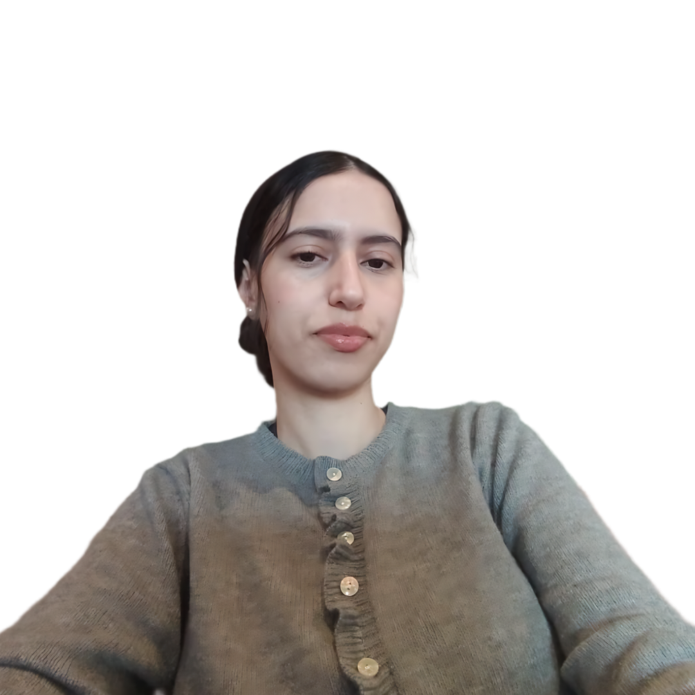
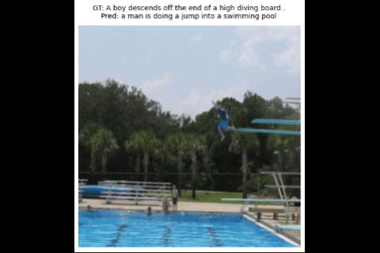
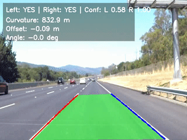
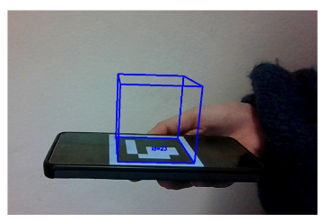
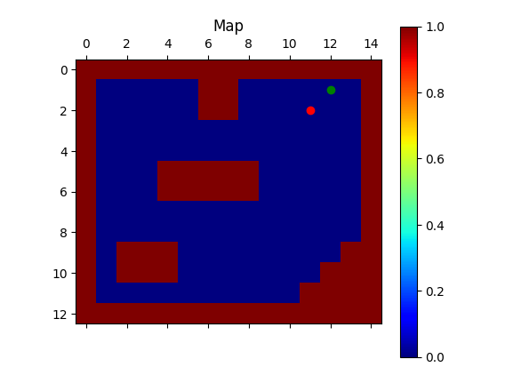
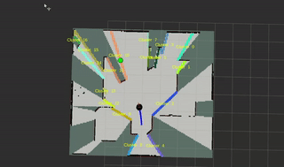
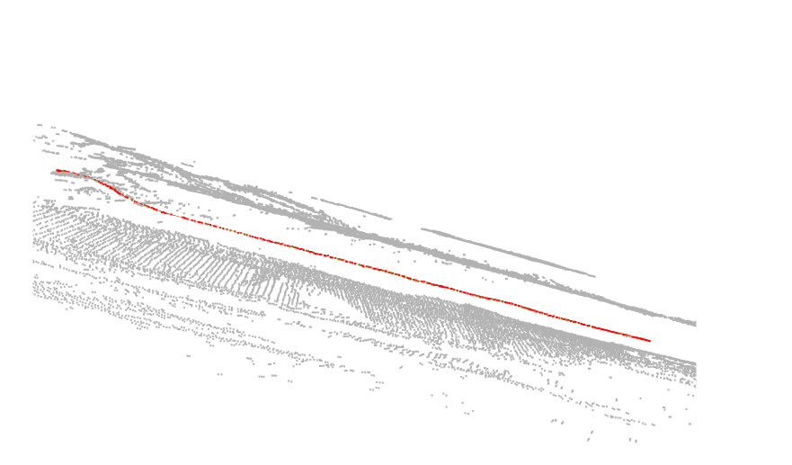
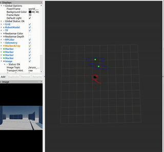
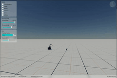

Scroll to explore
About Me

I am an Erasmus Mundus Joint Master’s Scholar in Intelligent Field Robotic Systems at the University of Girona, Spain, and Eötvös Loránd University, Hungary. My background in Electrical and Electronics Engineering, combined with my master’s focus, allows me to bridge the gap between hardware integration and advanced AI algorithms.
I focus on autonomous robotics, specifically perception, navigation, and simulation using ROS and deep learning. I have hands-on experience developing end-to-end autonomous systems, ensuring that robots can intelligently perceive and interact with unpredictable environments
Recently, I’ve also become interested in human–robot interaction and how robots can collaborate more naturally with people. My ultimate goal is to engineer intelligent systems that truly matter
Education
Erasmus Mundus Joint Master’s in Intelligent Field Robotic Systems (IFROS)
University of Girona (Spain) & Eötvös Loránd University (Hungary)
Specialization: Transitioned from core probabilistic robotics (SLAM, Path Planning, Multiview Geometry, Manipulation, Machine Learning) in Spain to advanced AI (Deep Network Development, 3D Sensor Fusion, Vehicle Sensors) in Hungary.
Thesis: AI-Enhanced Navigation and Digital Twin Simulation for Autonomous Agricultural Rovers
B.Sc. in Electrical and Electronics Engineering
Middle East Technical University (METU), Ankara, Turkey
Concentration in electrical and electronics engineering, covering circuits, embedded systems, telecommunications, antennas, and networking.
Thesis: UAV Forest Fire Extinguishing Quadcopter – Contributed to the development of a firefighting UAV within a multidisciplinary team, designing flight control, communication, and a payload release system for aerial monitoring and fire suppression.
Professional Experience
Robotics Research Engineer (Master's Thesis)
Agrikola AI | Barcelona, Spain
The Mission: Autonomous Navigation in GNSS-Denied Environments
Develop a fully autonomous agricultural rover capable of navigating dense crop environments without GPS, using vision-based perception and real-time safety constraints.
Architecture & Pipeline
- Pipeline: OAK-D RGB-D perception → ENet semantic segmentation → Nav2 traversability planning → Wagus motor control.
- Navigation: Replaced Pure Pursuit with ROS 2 Nav2; implemented FSM for row transitions and blind-driving recovery.
- Perception: Trained ENet models for real-time crop-row segmentation on embedded hardware.
Sim-to-Real Gap
- Dual Digital Twins: Gazebo for ROS 2 validation; NVIDIA Isaac Sim for domain randomization.
- Synthetic Data: Generated diverse procedural farm environments (lighting, terrain, textures) to overcome data scarcity.
Safety & Evaluation
- Safety Metrics: Rut detection and lateral slope estimation from point clouds.
- Evaluation: IoU (segmentation) and Cross-Track Error (CTE) for navigation accuracy.
Research Intern
VICOROB Laboratory, University of Girona | Girona, Spain
Project 1: Side-Scan Sonar Image Segmentation
- Adapted and evaluated SonarRanDiff (diffusion-based segmentation) against ViT baselines for Catalan coast sonar datasets.
- Developed a reproducible comparison pipeline for high-fidelity underwater image analysis.
Project 2: Hyperspectral Imaging for Food Safety
- Developed pre- and post-processing pipelines for a Vision Transformer-based contaminant detection system.
- Improved classification reliability through noise reduction and spectral filtering in hyperspectral pork images.
Technical Projects

Autonomous Fruit Recycling Mobile Manipulator
Led the full-stack development of an autonomous sorting system on an AgileX Scout 2.0 + xArm6 platform. Integrated YOLOv11 for real-time fruit classification and engineered a coordinated Finite State Machine (FSM) to coordinate complex mobile base navigation with 6-DOF manipulative tasks. Optimized the pipeline for high-precision bin sorting in dynamic laboratory environments.
ROS, YOLOv11, Python, OpenCV, xArm6, Scout 2.0
Source Code
Industrial Robot Manipulation Projects
Classification: Automated cylinder sorting on a Stäubli TS60 using VAL3
and inductive sensors.
Assembly: Coordinated cylinder-piston assembly on a Stäubli TX60 with
synchronized presence sensing.
Polishing: Implemented force-controlled surface polishing on a UR3e
using URScript for irregular trajectories.
VAL3, URScript, Force Control, Sensor Fusion
Source Code
Deep Learning Perception Suite
Image Captioning: ResNet-50 + LSTM with Attention for sequence
generation.
Image Colorization: Evaluated CNN vs FCN architectures for color
mapping.
Object Detection: Implementation of high-precision object detection
models.
PyTorch, YOLO, ResNet, Attention Mechanism, WandB
Source Code
Multi-Modal Perception (NuScenes)
Engineered a high-precision perception and processing pipeline for autonomous vehicle datasets. Fused global LiDAR point clouds with high-fidelity camera data and GNSS-INS positioning for 3D environment reconstruction.
Open3D, Python, NuScenes SDK, GNSS-INS, 3D Geometry
Source Code
ADAS Lane Keep Assist
Implemented a real-time lane detection system (~25 FPS) using classical Computer Vision and sliding window polynomial fitting. Designed the system to be reliable against varying lighting, rain, and perspective distortion.
OpenCV, Python, Perspective Transform, NumPy
Source Code
ArUco Vision & Augmented Reality
Developed a comprehensive C++ Computer Vision suite for real-time ArUco marker detection, camera calibration, and Augmented Reality (AR) pose estimation. Implemented 3D object rendering on physical markers with precise coordinate transforms using OpenCV.
C++, OpenCV, Pose Estimation, Camera Calibration
Source Code
Reinforcement Learning: Q-Learning Policy
Implemented a model-free Reinforcement Learning algorithm (Q-learning) for autonomous pathfinding in a 2D environment. Targeted epsilon-greedy exploration and parameter tuning (alpha, gamma) for efficient policy convergence.
Python, NumPy, Matplotlib, Q-Learning
Source Code
LiDAR Frontier Exploration
Developed an autonomous explorer utilizing 2D LiDAR and RRT* planning. Optimized target selection using entropy-based information gain for maximal environment coverage in minimized time.
ROS, RRT*, LiDAR, C++, Python
Source Code
GNSS-ICP Fusion Mapping
Developed a high-precision mapping system using Iterative Closest Point (ICP) for 2D scan registration and map alignment. Integrated RTK-corrected GNSS positions to achieve global consistency in sequential point cloud mapping.
Open3D, Python, ICP, GNSS, LiDAR
Source Code
Feature-Based EKF SLAM
Engineered a SLAM system fusing wheel odometry, IMU data, and range-only ArUco measurements. Successfully estimated robot trajectory and updated landmark maps in real-time within RViz.
ROS, EKF, Python, RViz, ArUco
Source Code
Kinematic Control System
Developed a precision kinematic control system for mobile platforms, integrating real-time differential drive odometry and velocity profiling for waypoint following and trajectory tracking.
C++, Python, Robot Kinematics, Control Theory
Source Code